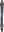
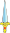
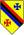
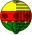

Tulajdonságai
A francia kártya lapjainak két ismertetője a szín és a magasság, amelyek alapján egy pakliban 52 (4×13) különböző lap lehetséges.
A négy szín: treff (fekete háromlevelű lóhere), káró (piros rombusz), kőr (piros szív), pikk (fekete lándzsahegy). Tehát nem valódi színekről van szó, hanem a lapok sarkában található jelről. Bizonyos játékokban a színek erősorrendje is számít, az előbbi felsorolás szerint: a treff a leggyengébb, a pikk a legerősebb. Egyes játékokban (például pasziánsz) lehet jelentősége annak, hogy a káró és a kőr piros, illetve a treff és a pikk fekete. Máshol viszont ez nem számít, így rutintalan játékosok számára zavaró is lehet, ennek kiküszöbölésére találták ki a négyszínű kártyát.
A lapoknak 13 féle magassága lehet: számok 2-től 10-ig, őket követik a figurás lapok: bubi vagy jumbó (jele általában J – jack –, ritkábban franciául V – valet, vagy hollandul B – boer), dáma (jele Q – queen –, ritkábban franciául D – dame, vagy hollandul V – vrouw), király (jele K – king –, ritkábban franciául R – roi, rex – vagy hollandul H – heer) és az ász (jele A – ace, ritkábban franciában 1, hollandul: aas), amely játéktól és szituációtól függően egyaránt betöltheti az 1-es és a legnagyobb lap szerepét is (pókerben például az ász alapesetben a legnagyobb lapnak számít, de ha sorhoz egyesre van szükség, akkor utóbbinak tekintik, a pasziánszban pedig az 1-es szerepet tölti be.).
Az 52 lap mellett egy pakli tartalmaz két vagy három, ritkábban négy dzsókert (általában udvari bolondot ábrázoló lap), amelyek bármely más lapot helyettesíthetnek (ha egy lap elveszett vagy megsérült). Ezeket viszont nem minden játékban használják.
Bár árusítanak francia kártyát egypaklis kiszerelésben is, egy teljes csomag francia kártya két pakliból áll. Ezeket a hátoldaluk színe különbözteti meg: az egyiknek piros, a másiknak fekete vagy szürkéskék. A bridzsben például csak egy paklira van szükség. A két pakli akár felváltva is használható, például kártyakeverő gép használata esetén szokás, hogy amíg az egyik paklival játszanak, addig a másikat keveri a gép.
| Olasz |  | |||
| Spanyol |  |
 | ||
| Svájci-német |  | |||
| Német/Magyar |  | |||
| Francia |